Next: Normal contact stiffness Up: Face-to-Face Penalty Contact Previous: General considerations Contents
The contribution of the face-to-face penalty contact to the weak formulation corresponds to the first term on the right hand side of Equation (2.6) in [19], written for both the slave and master side. This amounts to (in the material frame of reference):
| (255) |
or, in the spatial frame of reference:
| (256) |
Making a Taylor expansion for , which is a function of and keeping the linear term only (the constant term vanishes since zero differential displacements leads to zero traction) one obtains:
Notice that the integral is over the slave faces. The corresponding positions on the master side are obtained by local orthogonal projection. The displacements within a face on the slave side can be written as a linear combination of the displacements of the nodes belonging to the face ( is the number of nodes belonging to the slave face):
| 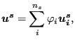 | (258) |
and similarly for the displacements on the master side (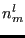 is the number of nodes belonging to the master face 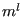):
| 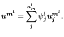 | (259) |
Substituting the above expressions in Equation (257) one obtains:
![$\displaystyle \sum_{s} \sum_{i=1}^{n_s} \sum_{j=1}^{n_s} \delta \boldsymbol{u_i...
...}}}{\partial \boldsymbol{u^s} } \varphi _j da \right ] \cdot \boldsymbol{u_j^s}$](img982.png) |
||
| 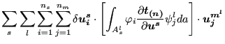 | ||
| 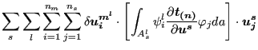 | ||
| 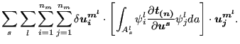 | (260) |
where “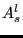” is the part of the slave face  , the orthogonal
projection of which is contained in the master face . This leads to the following stiffness contributions (notice the
change in sign, since the weak term has to be transferred to the left hand
side of Equation (2.6) in [19]:
, the orthogonal
projection of which is contained in the master face . This leads to the following stiffness contributions (notice the
change in sign, since the weak term has to be transferred to the left hand
side of Equation (2.6) in [19]:
| 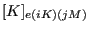 | 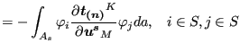 | (261) |
| 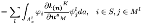 | (262) | |
| 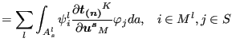 | (263) | |
| 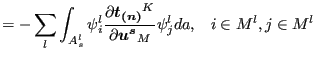 | (264) |
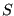 is the slave face “ ” at stake, is the master face to which the
orthogonal projection of the infinitesimal slave area belongs. The integrals in the above expression are evaluated by numerical
integration. One could, for instance, use the classical Gauss points in the
slave faces. This, however, will not give optimal results, since the master
and slave faces do not match and the function to integrate exhibits
discontinuities in the derivatives. Much better results are obtained by using the
integration scheme presented in the previous section and illustrated in Figure
136. In this way, the above integrals are
replaced by:
” at stake, is the master face to which the
orthogonal projection of the infinitesimal slave area belongs. The integrals in the above expression are evaluated by numerical
integration. One could, for instance, use the classical Gauss points in the
slave faces. This, however, will not give optimal results, since the master
and slave faces do not match and the function to integrate exhibits
discontinuities in the derivatives. Much better results are obtained by using the
integration scheme presented in the previous section and illustrated in Figure
136. In this way, the above integrals are
replaced by:
| 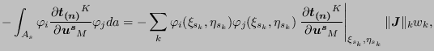 | (265) |
| 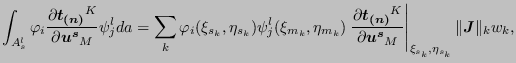 | (266) |
| (267) |
| (268) |
where  is the number of the integration point; (
) are the local coordinates of the slave
integration point; (
) are the local coordinates of the
orthogonal projection of the slave integration point onto the master surface
w.r.t. the master face to which the projection belongs;
is the norm
of the local Jacobian vector at the integration point on the slave face and
is the weight. As noted before the projection of integration points within
the same slave face may belong to different master faces. Each slave
integration point
is the number of the integration point; (
) are the local coordinates of the slave
integration point; (
) are the local coordinates of the
orthogonal projection of the slave integration point onto the master surface
w.r.t. the master face to which the projection belongs;
is the norm
of the local Jacobian vector at the integration point on the slave face and
is the weight. As noted before the projection of integration points within
the same slave face may belong to different master faces. Each slave
integration point  leads to a contact element connecting a slave face with a
master face and represented by a stiffness matrix of size
x
made
up of contributions described by the above equations for just one value of
integration point
leads to a contact element connecting a slave face with a
master face and represented by a stiffness matrix of size
x
made
up of contributions described by the above equations for just one value of
integration point  .
.
From this one observes that it is sufficient to determine the 3x3 stiffness matrix
at the slave integration points in order to obtain the stiffness matrix of the complete contact element. It represents the derivative of the traction in an integration point of the slave surface with respect to the displacement vector at the same location.